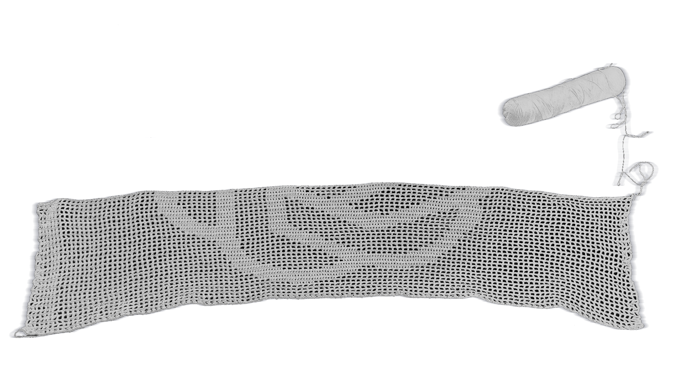
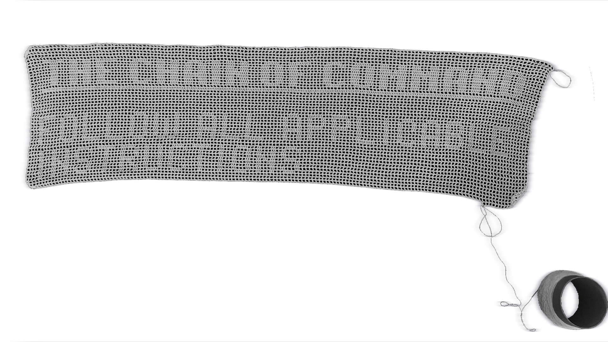

the chain of command


This work seeks to move away from speed and the myth of efficiency, favoring instead a long, slow process that attempts to crystallize a message in constant development, like the Model Spec of the AI model developed by OpenAI.
The risk of failure and obsolescence is high, given the different versions that are periodically released, but this is not a race, rather, it is an attempt to make the encounter and understanding between people and AI assistants tactile and affective.